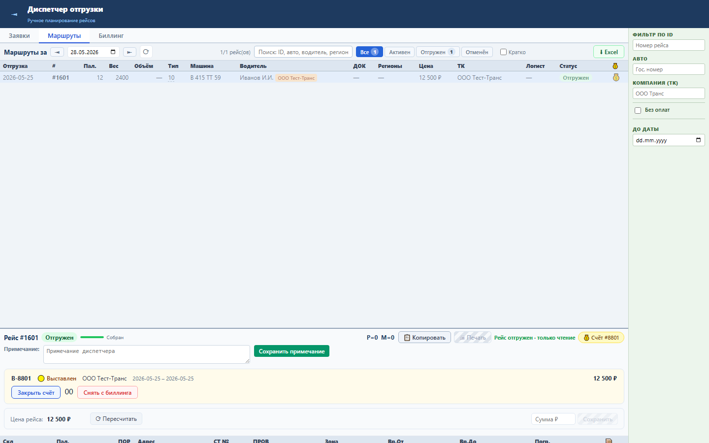
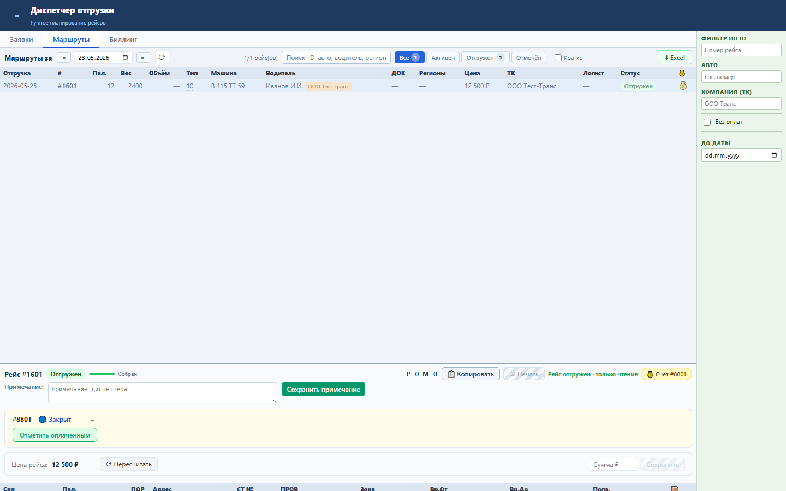
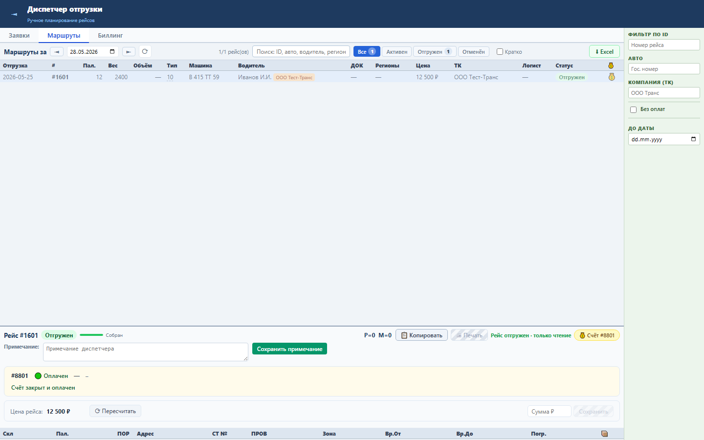

Зачем этот блок
Sprint 16 добавляет управляемый жизненный цикл счета. После выставления счет можно закрыть, а затем отметить оплаченным; каждый переход фиксируется через Oracle billing API.
Вход
Выставленный биллинговый заказ, привязанный к рейсу.
Выставленный биллинговый заказ, привязанный к рейсу.
Процесс
Закрыть счет, затем отметить оплату.
Закрыть счет, затем отметить оплату.
Результат
Счет получает финальный статус «Оплачен».
Счет получает финальный статус «Оплачен».
Структура данных
| Поле | Смысл |
|---|---|
closed | Счет закрыт для изменения состава. |
payed | Счет отмечен оплаченным. |
num_plat | Номер платежного документа, если задан. |
Как работать



Бизнес-процессы
- Выставлен: счет создан и содержит рейсы.
- Закрыт: бухгалтерия/диспетчер подтверждает состав и сумму.
- Оплачен: поступление денег фиксируется в системе.
- Контроль: статус виден в карточке рейса и реестре счетов.
Результат проверки
Sprint 16 закрыт функционально: backend tests 11 passed, UI smoke passed, load NFR passed. Проверены переходы выставлен → закрыт → оплачен.